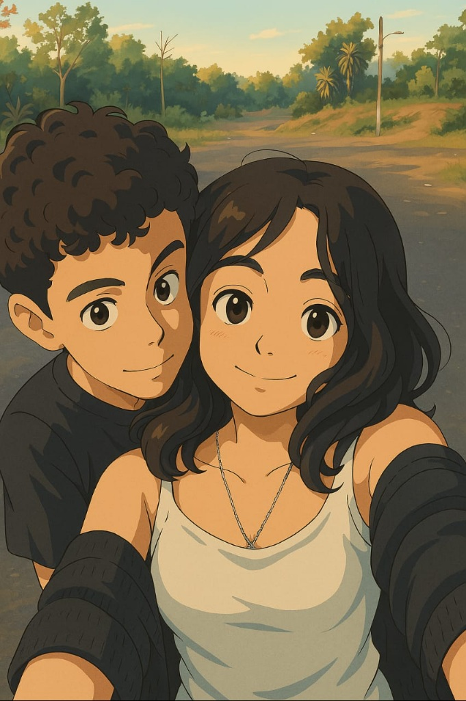
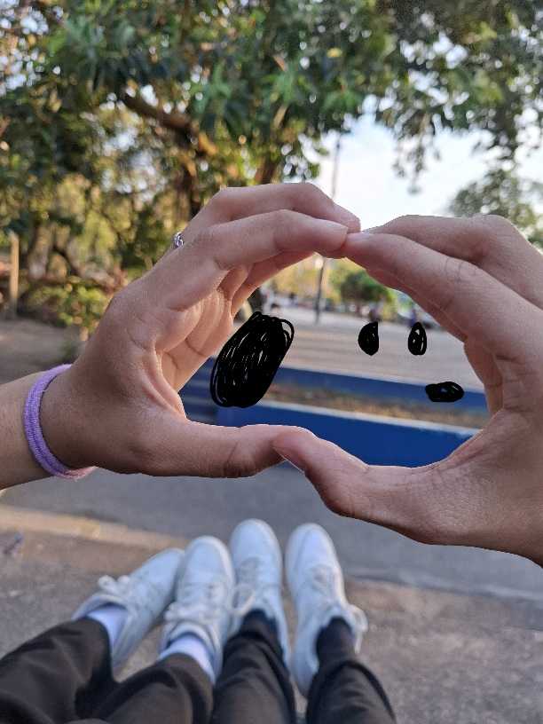
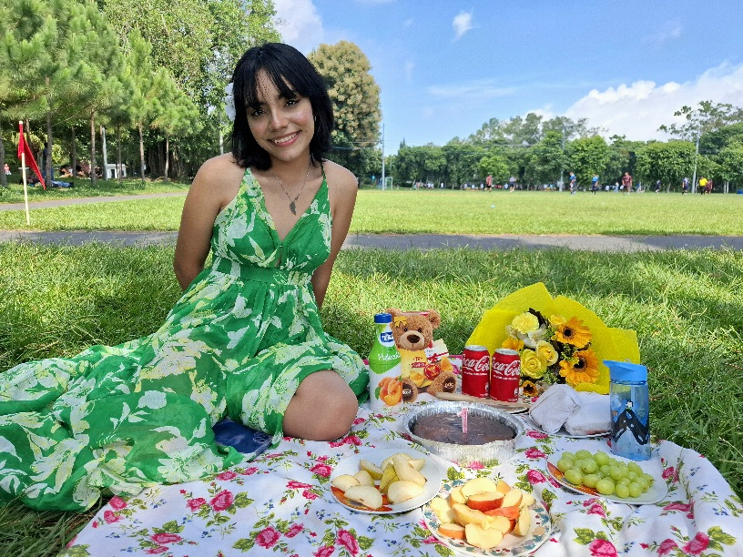

Fotos Favoritas
La verdad es que los dos tenemos muchísimas fotos juntos, pero entre ella y yo, estamos de acuerdo sobre de que estas son definitivamente las que más nos gustan de nuestra enorme colección.




